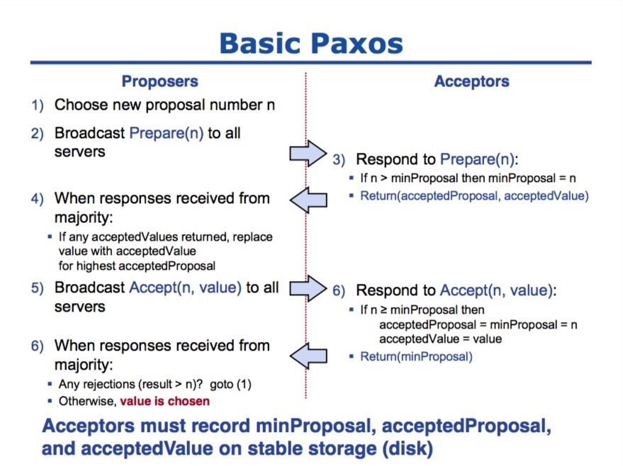
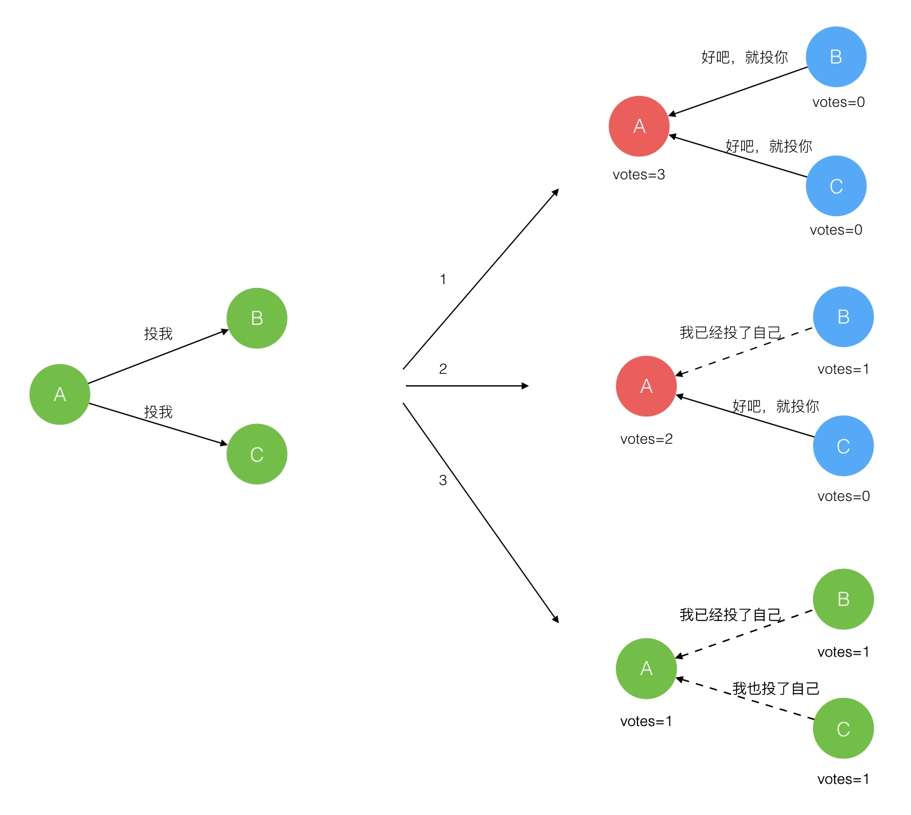

raft 参考文章
分布式系统中，网络不可靠，主机的差异性（包块性能、时钟），主机的不可靠等特性，从而产生了分布式系统的一致性问题，我们要保障分布式中的主机以同样的顺序来执行指令，从而产生一致性的结果，使得整个分布式系统像一台主机。
一致性问题
分布式系统产生一致性问题的原因可总结如下：
网络不可靠
主机不可靠
主机之间的差异性（性能、时钟等）
首先，网络可能导致我们发送的数据或者指令以乱序的方式到达，也可能会丢失数据，其次主机时不可靠的，可能会出现宕机，重启等，主机之间的差异性，包括主机的性能和时钟，这些都会导致分布式系统难于实现一致性，FLP不可能理论指出无法彻底解决一致性问题，在CAP中我们只能选择两项，大多数的分布式系统都选择了最终一致性，即若一致性来保证可用性和分区容错性。
在实际的生产环境中，一致性算法需要具备以下属性：
安全性：即不管怎样都不能返回错误的结果；
可用性：主要大部门的机器正常，就仍然可以正常工作；
不依赖时间来确保一致,即系统是异步的；
一般情况下,运行时间由大多数的机器决定,不会因为有少部分慢的机器而影响总体效率
通俗来讲，一致性的问题可以分解为两个问题：
1、任何一次修改保证数据一致性
2、多次数据修改的一致性
弱一致性：不要求每次修改的内容在修改后多副本的内容是一致的，对问题1的解决比较宽松，更多解决问题2，该类算法追求每次修改的高度并发性，减少多副本之间修改的关联性，以获得更好的并发性能。例如最终一致性，无所谓每次用户修改后的多副本的一致性及格过，只要求在单调的时间方向上，数据最终保持一致，如此获得了修改极大的并发性能。
强一致性：强调单次修改后结果的一致，需要保证了对问题1和问题2要求的实现，牺牲了并发性能。
一致性算法有：两阶段提交算法、分布式锁服务、Paxos算法和Raft算法。
两阶段提交参见这里分布式事务
分布式锁服务参加这里分布式锁以及三种实现方式
下面主要介绍Paxos算法和Raft一致性算法。
Paxos算法
Paxos算法是一个会者简单，不会者觉得很难的算法，就连Lamport本文也不得不为Paxos先后做了三次解释。
查阅了很多资料，最后发现维基百科中对Paxos的解释最为准确和易懂，可见参考文件中。这里只是阐述算法的过程和原理，不再做深一步的证明和理解。
Paxos算法分为两个简单，分别是准备阶段（Prepare）和接受阶段（Accept），当Proposer接收到来自客户端的请求时，就会进入如下流程：

Paxos算法
只要Proposer经过多数派接受，该提案就会成为正式的决议。
Raft一致性算法
Raft是Paxos的变体，不过Raft简化了Paxos，任何时间内，只有leader能够发起提案，这就涉及到leader选举问题。
Raft算法中有一下三个角色：
1.Leader：负责 Client 交互 和 log 复制，同一时刻系统中最多存在一个；
2.Follower：被动响应请求 RPC，从不主动发起请求 RPC；
3.Candidate : 由Follower 向Leader转换的中间状态。
Leader选举过程：
在极简的思维下，一个最小的 Raft 民主集群需要三个参与者（如下图：A、B、C），这样才可能投出多数票。初始状态 ABC 都是 Follower，然后发起选举这时有三种可能情形发生。下图中前二种都能选出 Leader，第三种则表明本轮投票无效（Split Votes），每方都投给了自己，结果没有任何一方获得多数票。之后每个参与方随机休息一阵（Election Timeout）重新发起投票直到一方获得多数票。这里的关键就是随机 timeout，最先从 timeout 中恢复发起投票的一方向还在 timeout 中的另外两方请求投票，这时它们就只能投给对方了，很快达成一致。

Raft 协议强依赖 Leader 节点的可用性来确保集群数据的一致性。数据的流向只能从 Leader 节点向 Follower 节点转移。当 Client 向集群 Leader 节点提交数据后，Leader 节点接收到的数据处于未提交状态（Uncommitted），接着 Leader 节点会并发向所有 Follower 节点复制数据并等待接收响应，确保至少集群中超过半数节点已接收到数据后再向 Client 确认数据已接收。一旦向 Client 发出数据接收 Ack 响应后，表明此时数据状态进入已提交（Committed），Leader 节点再向 Follower 节点发通知告知该数据状态已提交。
Leader的选举问题
分布式一致性算法与共识算法总结
经典分布式一致性算法：
2 Phase commit protocol
3 phase commit protocol
Paxos： 唯一有效的一致性算法， 其他算法都改算法的某种程度的简化版
分布式一致性算法特点：
领域： 分布式数据库
目标： 其解决的问题是分布式系统如何就某个值（决议）达成一致。
只有一种算法： paxos
特点： 无拜占庭容错， n/2 +1,
主流的传统分布式一致性算法其实只有一个：Paxos。包括Raft在内的其他算法，都属于Paxos的变种，或特定假设场景下的Paxos算法。
传统分布式一致性算法和区块链共识机制的异同点
相同点
Append only
时间序列化
少数服从多数
分离覆盖（即长链覆盖短链区块，节点大数据量日志覆盖小数据量日志）
不同点
传统分布式一致性算法并不考虑拜占庭容错，只假设所有节点仅发生宕机、网络故障等非人为问题，没有考虑恶意节点。
传统分布式一致性算法面向数据库或文件，而区块链共识机制面向交易或价值传输。
详细介绍
经典的分布式一致性算法
Paxos算法
Paxos算法是莱斯利·兰伯特（Leslie Lamport）1990年提出的一种基于消息传递的一致性算法，其解决的问题是分布式系统如何就某个值（决议）达成一致。
从工程实践的意义上来说，通过Paxos可以实现多副本一致性、分布式锁、名字管理、序列号分配等。比如，在一个分布式数据库系统中，如果各节点的初始状态一致，每个节点执行相同的操作序列，那么他们最后得到的状态就是一致的。为保证每个节点执行相同的命令序列，需要在每一条指令上执行一个“一致性算法”以保证每个节点看到的指令一致。后续又增添多个改进版本的Paxos，形成了Paxos协议家族，但其共同点是不容易工程实现。
Lamport在2011年的论文Leaderless Byzanetine Paxos中表示，不清楚实践中是否有效，考虑Paxos本身实现的难度以及复杂程度，此方案工程角度不是最优，但是系统角度应该是最好的。
- Raft算法
Paxos协议的难以理解是出了名的，斯坦福大学的博士生Diego Ongaro把对其的研究作为了自己的博士课题。2014年秋天，他正式发表了博士论文CONSENSUS: BRIDGING THEORY AND PRACTICE，并给出了分布式一致性协议的一个实现算法，即Raft。
在论文正式发表前，Diego Ongaro还把与Raft相关的部分摘了出来，形成了一篇十多页的文章In Search of an Understandable Consensus Algorithm，即人们俗称的Raft论文。
Raft算法主要注重协议的落地性和可理解性，让分布式一致性协议可以较为简单地实现。Raft和Paxos一样，只要保证n/2+1节点正常就能够提供服务；同时，Raft更强调可理解性，使用了分而治之的思想把算法流程分为选举、日志复制、安全性三个子问题。
在一个由Raft协议组织的集群中有三类角色：Leader（领袖）、Follower（群众）、Candidate（候选人）。Raft开始时在集群中选举出Leader负责日志复制的管理，Leader接受来自客户端的事务请求（日志），并将它们复制给集群的其他节点，然后负责通知集群中其他节点提交日志，Leader负责保证其他节点与他的日志同步，当Leader宕掉后集群其他节点会发起选举选出新的Leader。
共识算法
当我们描述传统分布式一致性算法时，其实是基于一个假设——分布式系统中没有拜占庭节点（即除了宕机故障，没有恶意篡改数据和广播假消息的情况）。而当要解决拜占庭网络中的数据一致性问题时，则需要一种可以容错的算法，我们可以把这类算法统称为拜占庭容错的分布式一致性算法。而共识机制，就是在拜占庭容错的分布式一致性算法基础上，根据具体业务场景传输和同步数据的通信模型。
- 工作量证明机制（Proof of Work, POW）
POW依赖机器进行数学运算来获取记账权，资源消耗相比其他共识机制高、可监管性弱；同时，每次达成共识需要全网共同参与运算，性能效率比较低，容错性方面允许全网50%节点出错。第一个运用POW的是比特币系统，它能够使更长总账的产生具有计算性难度，平均每10分钟有一个节点找到一个区块
- 股权证明机制（Proof of Stake, POS）
股权证明机制已有很多不同变种，但基本概念是产生区块的难度应该与用户在网络里所占的股权成比例
- 授权股权证明机制（DPOS）
每个股东可以将其投票权授予一名代表，获票数最多的前100名代表按既定时间表轮流产生区块。所有代表将收到等同于一个平均水平的区块所含交易费的10%作为报酬，如果一个平均水平的区块含有100股作为交易费，则一名代表将获得1股作为报酬。
该模式每30秒便可产生一个新区块，在正常的网络条件下区块链分叉的可能性极小，即使发生也可以在几分钟内得到解决。
- 实用拜占庭协议（PBFT）
PBFT是一种基于消息传递的一致性算法，算法经过三个阶段达成一致性，这些阶段可能因为失败而重复进行。
假设节点总数为3f+1，f为拜占庭错误节点：
（1）当节点发现leader作恶时，通过算法选举其他的replica为leader；
（2）leader通过pre-prepare 消息把它选择的value广播给其他replica节点，其他replica节点如果接受则发送 prepare，如果失败则不发送；
（3）一旦2f个节点接受prepare消息，则节点发送commit消息；
（4）当2f+1个节点接受commit消息后，代表该value值被确定。
b6b2c783ac6f4c0687543a5fc82fa405_th.jpg.png
该算法主要应用在hyperledger fabric等联盟区块链或私有区块链场景中，容错率低、灵活性差，超过1/3的节点作恶就会导致系统崩溃，并且不可动态添加节点（部分论文讨论了动态节点的PBFT算法，但是理论和实践上都有比较强的假设条件）。
- GEAR共识协议（Group Estimate and Rotate）
该协议是唐盛（北京）物联技术有限公司自主研发的共识协议，通过轮转记账（rotate）、集体评估（group estimate）和齿轮共识路由（gear）三个子协议组成，结合区块链数据结构和点对点网络通信的特点，实现安全、高效、去中心化、应用场景灵活的数据同步共识。目前，该协议已经在“唐盛链”中得到应用。
协议的参与者包括轮转见证人（rotate witness）、一级集体评估人（voter）、二级集体评估人（valuer）。Voter作为接入共识网络的用户，既是系统的使用者也是一级集体评估人，按照其所持代币加权评估选举出轮转见证人，轮转见证人按照等概率轮流记账（产生区块）。二级集体评估人是在评估事件发生时由轮转见证人转化而来，通过加权平均的接近率抢夺一次记账机会
作者：millerix
链接：https://www.jianshu.com/p/9a9290fb0727
来源：简书
著作权归作者所有。商业转载请联系作者获得授权，非商业转载请注明出处。